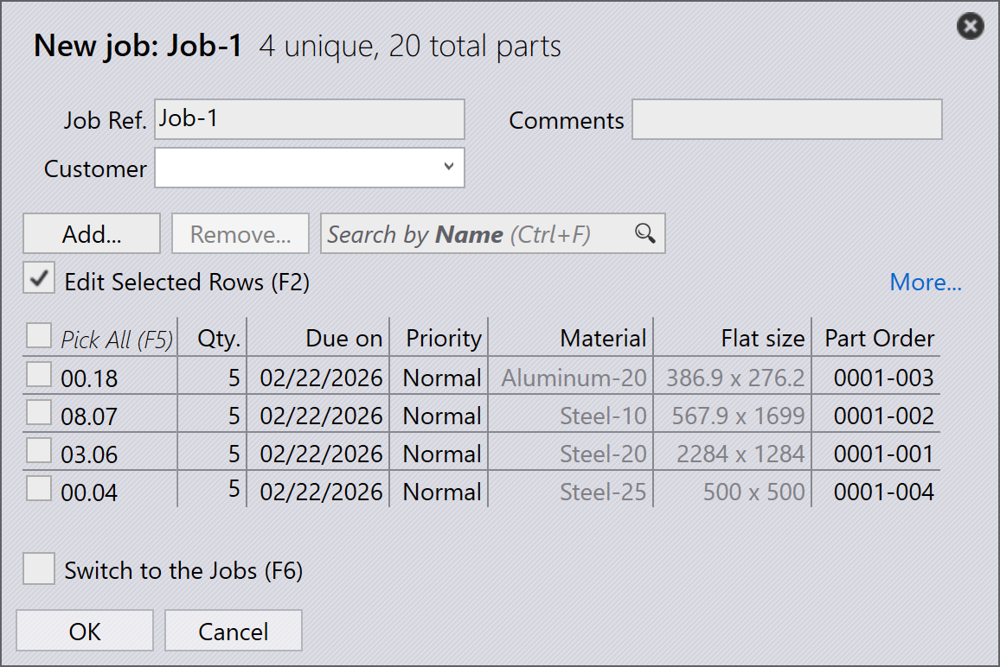

Pracovný postup
TruSmartCAM je systém riadenia výroby, ktorý spravuje a optimalizuje procesy výroby plechu. Pracovný postup v TruSmartCAM pozostáva zo série krokov, ktoré vykonáte na dokončenie konkrétnej úlohy alebo procesu. Môžete prispôsobiť pracovný postup tak, aby vyhovoval rôznym výrobným procesom a prispôsobil sa vašim špecifickým potrebám. Pracovný postup v TruSmartCAM zvyčajne zahŕňa nasledujúce kroky:
1. Konfigurácia systému
Nakonfigurujte TruSmartCAM tak, aby zodpovedal vášmu výrobnému prostrediu. Tento základný krok zahŕňa definovanie strojov s ich schopnosťami a parametrami, pridávanie dostupných materiálov a rozsahov hrúbok, konfiguráciu knižníc nástrojového vybavenia s raznicami a matricami, vytváranie nastavovacích hárkov pre rôzne konfigurácie strojov a správu používateľských účtov s príslušnými oprávneniami. Správne nakonfigurovaný systém zabezpečuje presné zpracovanie a predchádza chybám v neskorších fázach. Toto nastavenie sa zvyčajne vykonáva raz počas počiatočného nasadenia, s periodickými aktualizáciami podľa vývoja vašej továrne.
Pre viac informácií pozrite Add/Remove machine, Material, Sheets, Setup tooling a Configure users.

2. Pridanie dielov do knižnice
Importujte 2D alebo 3D CAD diely do knižnice dielov pomocou podporovaných formátov, ako sú DXF, DWG alebo STEP súbory. Počas importu TruSmartCAM automaticky analyzuje geometriu dielu, overuje vyrobiteľnosť, priradí požadovanú technológiu plechu (laser, razenie alebo kombináciu) a generuje náhľadové miniatúry. Importované diely sa zobrazujú ako dlaždice v zobrazení knižnice, kde farebne kódované ikony ukazujú stav dielu, typ technológie, požiadavky na materiál a akékoľvek zistené problemy. Tento vizuálny systém umožňuje rýchle posúdenie pripravenosti dielu na prvý pohľad.
Pre viac informácií pozrite Library.

3. Overenie dielov a nástrojového vybavenia
Skontrolujte každý importovaný diel kvôli potenciálnym výrobným problémom. Overte, že geometria dielu je platná a vyrobiteľná, priradenia nástrojového vybavenia sú správne a dostupné, výber materiálu a hrúbky zodpovedá inventáru a ohýbacie sekvecie sú správne definované pre tvarované diely. Ak sú zistené problémy, otvorte diel v TecZone, aby ste upravili geometriu, znovu priradili alebo optimalizovali nástrojové vybavenie, upravili parametre spracovania alebo opravili špecifikácie materiálu. Riešenie problémov v tejto fáze zabraňuje oneskoreniam výroby a znižuje odpad počas výroby.
Pre viac informácií pozrite Part state a Tooling status.

4. Organizovanie dielov do pracovných úloh
Zoskupte overené diely do pracovných úloh na základe výrobných požiadaviek. Pracovná úloha predstavuje logickú výrobnú jednotku, ktorá môže zahŕňať diely z jednej zákazníckej objednávky, diely zdieľajúce spoločné materiály a hrúbku, diely s podobnými termínmi dodania alebo kombináciu založenú na vašej výrobnej stratégii. Pracovné úlohy poskytujú kontajner na plánovanie, umožňujú dávkové spracovanie súvisiacich dielov, umožňujú efektívne využitie materiálu prostredníctvom vkladania a zjednodušujú sledovanie a vykazovanie. Pracovné úlohy možno vytvoriť manuálne výberom dielov alebo automaticky na základe vopred definovaných pravidiel a filtrov.
Pre viac informácií pozrite Jobs.

5. Plánovanie pracovných úloh na výrobné stroje
Po vytvorení pracovnej úlohy ju priraďte k príslušnému výrobnému stroju. Zvážte schopnosti stroja vrátane podporovaných technológií (laser, razenie, vežový lis), kapacitu materiálu a hrúbky, dostupné nástrojové vybavenie a aktuálne zaťaženie. Ak existuje viacero vhodných strojov, vyberte na základe výrobnej priority, dostupnosti stroja, požiadaviek na nastavenie alebo optimalizácie nákladov. Priradenie môže byť manuálne pre flexibilitu alebo automatické na základe vopred nakonfigurovaných pravidiel a algoritmov plánovania strojov.
Pre viac informácií pozrite Plan job.

6. Uvoľnenie NC pre pracovné úlohy
V tejto fáze sa generujú rozloženia rezania. Stále môžete upravovať rozloženia a pridávať rezacie technológie do rozloženia pomocou TecZone. Následne exportujte NC výstup a preveďte ho do riadiaceho systému stroja alebo do určeného sieťového umiestnenia. Pracovná úloha sa potom uzamkne, aby sa zabránilo ďalším úpravám, a jej stav sa aktualizuje na "Uvoľnené" pre sledovanie výroby.
Pre viac informácií pozrite Send/Recall NC.

7. Dokončenie výroby a finalizácia pracovných úloh
Vykonajte uvoľnenú pracovnú úlohu na priradenom stroji. Počas výroby operátor stroja postupuje podľa NC programu, overuje kvalitu dielov počas rezania, spravuje nakladanie a vykladanie materiálu a rieši akékoľvek alarmy alebo problemy stroja. Po dokončení výroby označte jednotlivé diely alebo celú pracovnú úlohu ako dokončenú v TruSmartCAM. Tento posledný krok aktualizuje záznamy inventára, zaznamená skutočný výrobný čas a použitie materiálu, archivuje údaje pracovnej úlohy na vykazovanie a analýzu a dokončuje cyklus pracovného postupu.
Pre viac informácií pozrite Mark complete.